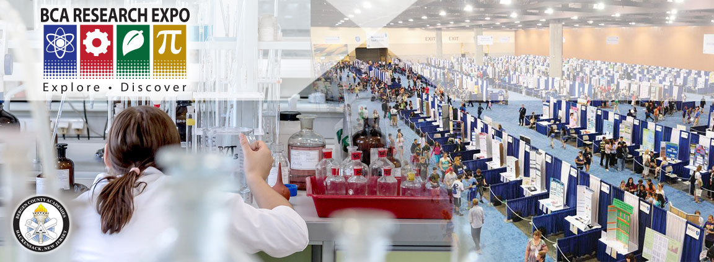

<header id="mainHeader" title="Main Header">
    
    <!-- To map the area being used for the Expo logo in the top left of the page. Javascript is used to reset the coordinates as the page shrinks or spreads -->
    <map name="image-map">
        <area target="_self" alt="Home" title="Home" href="index.html" coords="60,6,311,159" shape="rect">
        <area target="_blank" alt="Bergen County Academies" title="Bergen County Academies"
            href="https://bcts.bergen.org/index.php/2016-05-10-17-30-50/bcts-campuses" coords="67,364,50"
            shape="circle">
    </map>
    <!-- The area for social media links and the search bar -->
    <div id="mainHeader_topRight">
        <a href="#"></a>
        <a href="#"></a>
        <a href="#"></a>
        <div id="search" class="search">
            <!-- SiteSearch Google -->
            <form method="get" action="http://www.google.com/search">
                <input name="q" class="search-input" onkeyup="buttonUp();" placeholder="Enter your search..."
                    type="search" value="">
                <input class="search-submit" type="submit" value="">
            </form>
            <!-- End SiteSearch Google -->
        </div>
    </div>
</header>